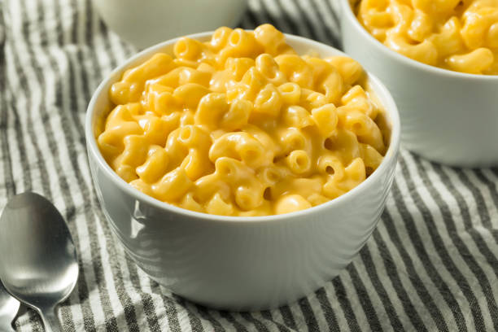

A Classic Mac-N-Cheese Recipe

Description
Classic Mac and Cheese is a timeless comfort food that combines tender elbow macaroni with a rich, creamy cheese sauce.
Whether served as a main course or a side dish, this Mac and Cheese is sure to delight both kids and adults alike with its warm, nostalgic flavors.
Ingredients
- 8 ounces elbow macaroni
- 2 cups shredded sharp cheddar cheese
- 1/2 cup grated Parmesan cheese
- 3 cups milk
- 1/4 cup butter
- 1/4 cup all-purpose flour
- 1/2 teaspoon salt
- 1/2 teaspoon ground black pepper
- 1/2 teaspoon paprika
Steps to Follow
- Preheat your oven to 350°F (175°C).
- Cook the macaroni according to the package instructions. Drain and set aside.
- In a large saucepan, melt the butter over medium heat. Stir in the flour and cook for about 1 minute, until bubbly.
- Gradually whisk in the milk. Cook, stirring constantly, until the mixture thickens and bubbles.
- Remove from heat and stir in the cheddar cheese and Parmesan cheese until melted and smooth.
- Season with salt, pepper, and paprika.
- Add the cooked macaroni to the cheese sauce and stir to combine.
- Pour the macaroni and cheese into a baking dish.
- Bake in the preheated oven for 20-25 minutes, until golden and bubbly.
- Let cool for a few minutes before serving.